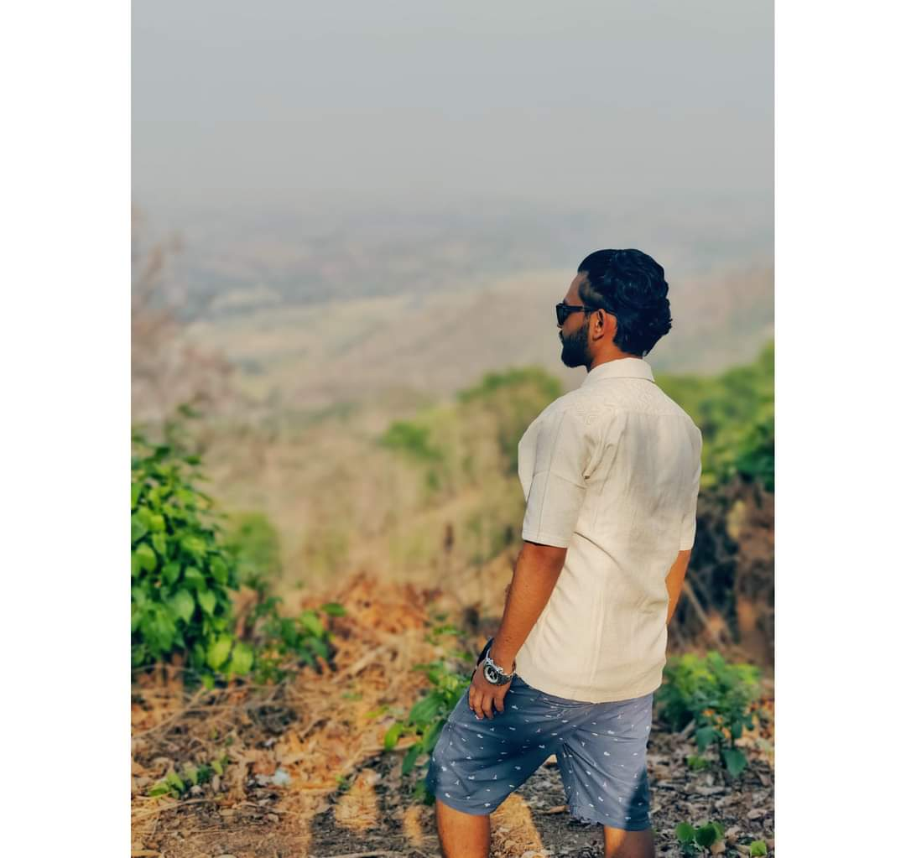
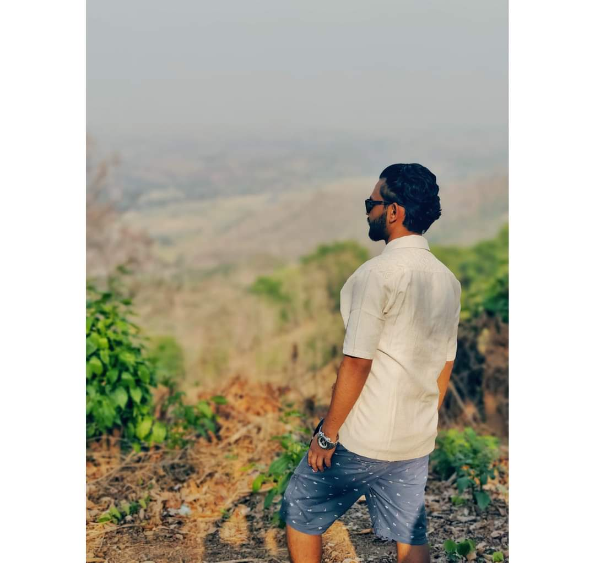

আলামিন হোসাইন একজন গার্মেন্ট অপারেটর, যিনি প্রতিদিন পোশাক তৈরি করেন। তার দক্ষ হাতে তৈরি পোশাকগুলি সারা দেশে বিক্রি হয়। তার পরিশ্রমে পরিবার আর্থিক সচ্ছলতা পায়। আলামিনের কাজের প্রতি নিষ্ঠা ও ভালবাসা সবসময়ই তার পথপ্রদর্শক। তার জীবন প্রতিদিনই নতুন সফলতার কাহিনী লেখে।
School life is the most beautiful life of human life. What is once gone can never be regained.
আলামিন হোসাইন একজন মেধাবী ছাত্র এবং একজন ভালো মানুষ। মধ্যবিত্ত পরিবারের সন্তান আলামিনের জীবন ছিল কঠিন চ্যালেঞ্জে ভরা, কিন্তু তার মনোবল ছিল দৃঢ়। তার বাবা ছিলেন একজন ছোট ব্যবসায়ী এবং মা গৃহিণী। তারা সবসময় চেয়েছেন যে আলামিন ভালোভাবে পড়াশোনা করে জীবনে উন্নতি করুক। ছোটবেলা থেকেই আলামিনের পড়াশোনার প্রতি আগ্রহ ছিল প্রচুর। স্কুলে সে নিয়মিত পড়াশোনা করত এবং শিক্ষকরা তাকে খুবই পছন্দ করতেন। প্রাথমিক বিদ্যালয়ের দিনগুলো ছিল আলামিনের জন্য বেশ আনন্দময়। প্রতিদিন সকালে উঠে স্কুলের প্রস্তুতি নিত এবং বইপত্র গুছিয়ে রওনা হত। স্কুলে গিয়ে প্রথমে জাতীয় সংগীত গাওয়া, তারপর শ্রেণীকক্ষে যাওয়া। আলামিন সবসময় প্রথম বেঞ্চে বসত এবং মনোযোগ দিয়ে শিক্ষকের কথা শুনত। বাড়িতে ফিরে এসে, সে হোমওয়ার্ক করত এবং তারপর কিছুটা সময় খেলাধুলা করত। মাধ্যমিক বিদ্যালয়ে ওঠার পর থেকে আলামিনের জীবনে কিছু পরিবর্তন আসে। পড়াশোনার চাপ বাড়তে থাকে এবং পরীক্ষার প্রস্তুতি নিতে হয়। কিন্তু আলামিন কখনও হতাশ হয়নি। সে সবসময় মনোযোগ দিয়ে পড়াশোনা করত এবং প্রয়োজনীয় সহায়তার জন্য শিক্ষকদের কাছে যেত। পরিবারও তাকে সবসময় সমর্থন করত, যদিও তাদের আর্থিক অবস্থা তেমন ভালো ছিল না। আলআমিনের বাবা অনেক পরিশ্রম করে সামান্য আয় করতেন এবং তার মা সংসারের কাজ সামলাতেন। তবুও, তারা সবসময় চেষ্টা করতেন আলামিনের পড়াশোনার জন্য প্রয়োজনীয় সবকিছু সরবরাহ করতে। আলামিন তার বাবার কাছ থেকে শিখেছে পরিশ্রম এবং মায়ের কাছ থেকে শিখেছে ভালোবাসা এবং সহানুভূতি। সে প্রতিদিন স্কুল থেকে ফিরে এসে তার বাবাকে দোকানে সাহায্য করত এবং মাকে ঘরের কাজে সাহায্য করত। একবার স্কুলে বার্ষিক পরীক্ষার সময়, আলামিনের বাবার ব্যবসায়িক সমস্যা দেখা দেয়। পরিবার অর্থনৈতিক সংকটে পড়ে। আলামিনের পড়াশোনার খরচ চালানো কঠিন হয়ে পড়ে। কিন্তু আলামিন কখনও ভেঙে পড়েনি। সে নিজের উদ্যোগে গৃহশিক্ষক হিসেবে কাজ শুরু করে এবং নিজের পড়াশোনার খরচ নিজেই মেটাতে শুরু করে। সে বুঝেছিল যে কঠিন পরিশ্রম এবং অধ্যবসায় দিয়ে সবকিছু সম্ভব। স্কুলে আলামিন সবসময়ই প্রথম হতো। সে শুধু পড়াশোনায়ই নয়, সহ-পাঠ্যক্রমিক কার্যক্রমেও ভালো ছিল। সে বিতর্ক প্রতিযোগিতা, আবৃত্তি, এবং খেলাধুলায়ও অংশগ্রহণ করত। শিক্ষকরা সবসময় তার প্রশংসা করতেন এবং বন্ধুরা তাকে সম্মান করত। আলামিনের জীবন এক অনুপ্রেরণার গল্প হয়ে ওঠে। মাধ্যমিক পরীক্ষা শেষে, আলামিন তার স্কুলের সেরা ছাত্র হিসেবে পরিচিত হয়। সে উচ্চ মাধ্যমিকে ভর্তি হয় এবং সেখানেও তার মেধার পরিচয় দেয়। তার স্বপ্ন ছিল একজন প্রকৌশলী হওয়ার। সে প্রতিদিন একাগ্রচিত্তে পড়াশোনা করত এবং তার লক্ষ্যের দিকে অগ্রসর হতে থাকে। আলমিনের গল্প আমাদের শেখায় যে, কঠিন পরিশ্রম, অধ্যবসায় এবং দৃঢ় মনোবল দিয়ে জীবনের সব প্রতিকূলতা জয় করা যায়। তার জীবন ছিল সংগ্রামের এবং সাফল্যের কাহিনী। পরিবার, শিক্ষক, এবং বন্ধুদের সমর্থনে এবং নিজের কঠোর পরিশ্রমে আলামিন তার স্বপ্ন পূরণের পথে এগিয়ে চলে। তার এই যাত্রা আমাদের সবাইকে অনুপ্রেরণা দেয়।
To achieve success we must work hard. Those who have reached the pinnacle of success must be working hard
আলামিন হোসাইন একজন গার্মেন্টস অপারেটর, যিনি তার কাজের প্রতি অগাধ নিষ্ঠা ও মনোযোগ দিয়ে কাজ করেন। তার কর্মজীবন শুরু হয়েছিল এক ছোট্ট গার্মেন্টস ফ্যাক্টরিতে, যেখানে প্রথমদিকে তার কাজ ছিল কাপড় কাটার। আলামিন তার কাজে খুবই দক্ষ ছিল এবং তার নিয়মানুবর্তিতা ও নিষ্ঠা দেখে ফ্যাক্টরির মালিক তাকে ধীরে ধীরে উন্নতি করতে থাকেন। প্রথমে আলামিনের কাজ ছিল সহজ, শুধু কাপড় কাটা এবং সেলাই করা। কিন্তু সে প্রতিদিন নতুন কিছু শিখতে চেষ্টা করত। ফ্যাক্টরিতে কাজ করার সময়, সে প্রতিদিন নতুন নতুন প্রযুক্তি ও দক্ষতা আয়ত্ত করত। তার সততা ও কঠোর পরিশ্রমের জন্য সহকর্মীরা তাকে খুবই সম্মান করত। আলামিন সবসময় নিজের কাজ ঠিকমতো করত এবং অন্যদেরও সাহায্য করত। একদিন ফ্যাক্টরির বড় একটি অর্ডার আসে। কাজের চাপ বেড়ে যায় এবং সবাই খুবই ব্যস্ত হয়ে পড়ে। আলামিন এই সুযোগে তার দক্ষতা প্রদর্শন করে। সে শুধু নিজের কাজই নয়, অন্যদের কাজেও সাহায্য করতে থাকে। তার এই উদ্যম দেখে ফ্যাক্টরির মালিক তাকে প্রমোশন দেন এবং সুপারভাইজার পদে উন্নীত করেন। সুপারভাইজার পদে এসে আলামিন তার কাজের নতুন দায়িত্বগুলোও নিষ্ঠার সাথে পালন করে। সে নিশ্চিত করে যে সব কাজ সময়মতো এবং মানসম্মতভাবে সম্পন্ন হয়। তার নেতৃত্বে ফ্যাক্টরির উৎপাদনশীলতা বেড়ে যায় এবং কর্মীদের মধ্যে একটি দলগত মনোভাব সৃষ্টি হয়। আলামিন সবসময় তার সহকর্মীদের সাথে ভালো ব্যবহার করত এবং তাদের প্রয়োজনীয় সাহায্য করত। একদিন একটি বড় বিদেশি ক্রেতা ফ্যাক্টরিতে আসেন। ফ্যাক্টরির মালিক আলামিনকে দায়িত্ব দেন ক্রেতার সাথে আলোচনার। আলামিন তার প্রজ্ঞা ও দক্ষতার সাথে ক্রেতার সাথে আলোচনা করে এবং বড় একটি অর্ডার নিশ্চিত করে। এই সাফল্যের পর, আলামিনের সম্মান আরও বেড়ে যায় এবং তার কাজের গুরুত্ব আরও বাড়ে। আলামিন সবসময় নিজেকে উন্নত করার চেষ্টা করত। সে বিভিন্ন প্রশিক্ষণ প্রোগ্রামে অংশগ্রহণ করত এবং নতুন নতুন প্রযুক্তি শিখত। তার এই উদ্যম এবং নিষ্ঠা দেখে ফ্যাক্টরির মালিক তাকে আরও বড় পদে উন্নীত করেন। এখন আলামিন শুধু ফ্যাক্টরির সুপারভাইজার নয়, ম্যানেজার পদে কাজ করে। ম্যানেজার পদে এসে আলামিন আরও দায়িত্বশীল হয়ে ওঠে। সে ফ্যাক্টরির সব কাজের দেখাশোনা করে এবং নিশ্চিত করে যে সব কাজ ঠিকমতো হচ্ছে। তার নেতৃত্বে ফ্যাক্টরির উৎপাদনশীলতা ও মান উভয়ই বেড়ে যায়। ফ্যাক্টরির মালিক তার কাজে খুবই সন্তুষ্ট এবং তাকে কোম্পানির অন্যতম গুরুত্বপূর্ণ সদস্য হিসেবে গণ্য করেন। আলামিনের জীবনের গল্প আমাদের শেখায় যে, কঠোর পরিশ্রম, নিষ্ঠা এবং মনোযোগ দিয়ে জীবনে বড় সাফল্য অর্জন করা যায়। তার কর্মজীবন ছিল সংগ্রামের এবং সাফল্যের কাহিনী। পরিবার, সহকর্মী এবং মালিকের সমর্থনে এবং নিজের কঠোর পরিশ্রমে আলামিন তার কর্মজীবনে সাফল্যের শীর্ষে পৌঁছাতে সক্ষম হয়। তার এই যাত্রা আমাদের সবাইকে অনুপ্রেরণা দেয় এবং শেখায় যে কঠোর পরিশ্রম ও নিষ্ঠার মাধ্যমে জীবনে বড় কিছু অর্জন করা সম্ভব।
 
